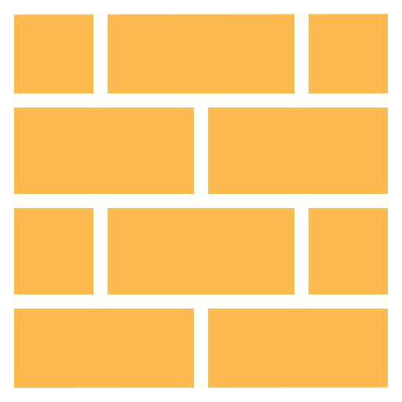

Five Layouts, One WalkBacktracking, branch points and walk length
From a Hallway to a ManorEight plans, one recipe at a time, measured from a senior plan
Roll a ManorA generator that follows the recipes, with fourteen rule checks
Lock, Key and ShortcutHard gates, where the key goes, and the way home
Three Floors, Six LinksStairs, ladders, drops and a jump pad between floor planes

Process · Blockout and CombatBlockoutPlain shapes at the right size: metrics, cover heights, wayfinding, a playtest and a landmarkOpen →
Measure Against the PlayerHallway width, stair slope, wall height
How Tall Is Cover?Knee, waist and head height, and the angle
Which Way Is the Exit?Wayfinding aids, subtle to direct
Read the HeatmapTwenty testers, two clumps, two different fixes
Make One Mass the LandmarkHeight, spread, orientation and shape against the neighbours